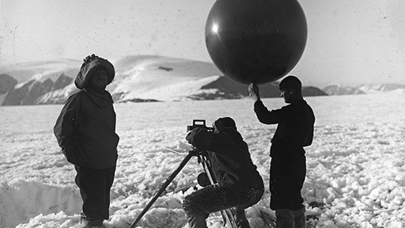
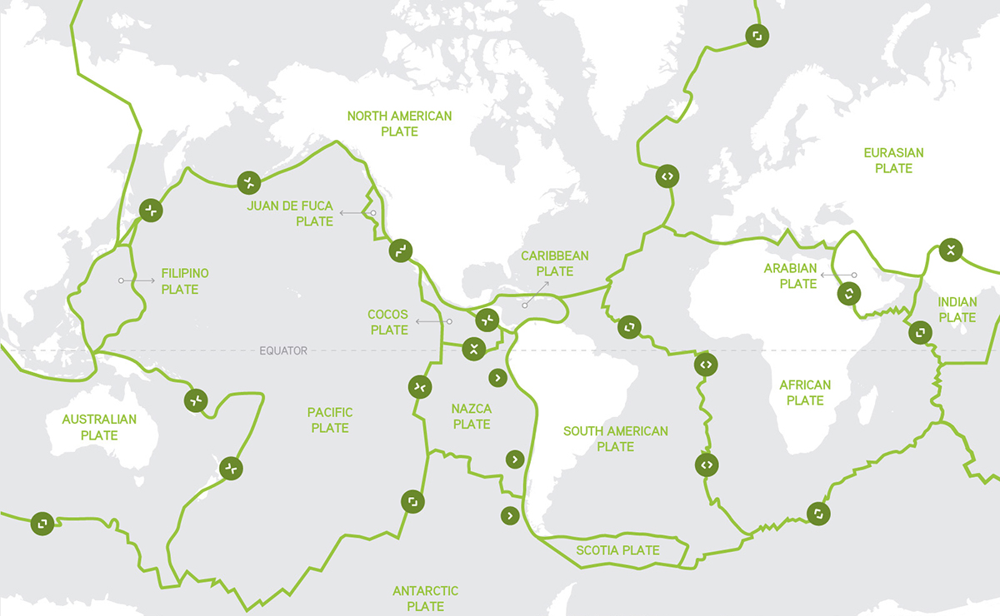
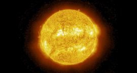

Sat Oct 26 2019 15:33:16 GMT+0200 (Central Africa Time)
While other scientists put forth the theory that the Earth's landmasses had once been connected by land bridges that had since sunk into the ocean, and had always been located where they are today, a few renegade scientists postulated that the Earth once contained one huge supercontinent. In 1858, Austrian geologist Eduard Suess postulated a supercontinent called Gondwanaland, and American astronomer William Henry Pickering suggested in 1907 that the continents broke up when the Moon was separated from the Earth.
Weather:0 My Mood:Awesome Sat Oct 26 2019 15:31:52 GMT+0200 (Central Africa Time)
But how do we know that the Earth's surface is moving? Some of the early scholars studying the first world maps began to notice some very odd things — for instance, that West Africa seems to fit nicely into Brazil. In the early 20th century, a German meteorologist named Alfred Wegener began assembling evidence suggesting that the continents were once connected. He found very similar geological strata in West Africa and in Brazil. And during World War I, he wrote a book arguing that at one time all the continents on Earth had been united in a single supercontinent that he called Pangaea.
Weather:0 My Mood:Bad Sat Oct 26 2019 15:30:45 GMT+0200 (Central Africa Time)
Though Earth was neatly orbiting the Sun as a rocky mass four and a half billion years ago, no organism could survive there. Radiation from the recent supernova kept the planet extremely hot, its surface molten, and oxygen was non-existent. Plus, incredibly massive meteorites and asteroids frequently slammed onto the surface — creating even more heat. The Earth got so hot, it began melting. Heavier material sank to the bottom, lighter stuff rose to the top. Some elements evaporated. This transformation created the Earth's layered core and mantle, crust, and atmosphere.
Weather:0 My Mood:No MoodSat Oct 26 2019 15:29:28 GMT+0200 (Central Africa Time)
The cosmic creation of our Solar System: New elements, combined with the just-right Goldilocks Conditions came together and formed our Solar System.
Weather:0 My Mood:HappySat Oct 26 2019 15:27:44 GMT+0200 (Central Africa Time)
It was five billion years ago. A giant cloud of matter in our own galaxy, the Milky Way, condensed under its gravity, exploding in nuclear fusion.
Weather:0 My Mood:No Mood Sat Oct 26 2019 15:21:50 GMT+0200 (Central Africa Time)
Every culture has its own origin story. They may be very short anecdotes. Or they might be elaborate narratives that help explain the mysteries of our existence. Big History is an origin story like many others. But, instead of being rooted in a specific culture or geography, Big History aims to account for everything we know and that which we have yet to discover. Contributors include philosophers, scientists, scholars, adventurers, and curious learners of all stripes who weave a story of enormous scale. And like all origin stories below, the Big History story has developed over time, and will continue to evolve.
Weather:0 My Mood:NeutralSat Oct 26 2019 15:21:37 GMT+0200 (Central Africa Time)
To start using Diaro app you should know: - HOW TO USE DIARO APP Create new entries, folders, tags or locations by using "+" buttons. Use search to find entries by any keyword in a title or text, filter results by date, folder, tags or locations from the left side menu. - HOW TO CUSTOMIZE Set different backgrounds for each folder. All entries in customized folders will have a different look. Diaro language, UI color, text size, etc. can be changed in Diaro Settings -> Preferences -> Appearance. - HOW TO PROTECT YOUR DATA To secure access to the app, set Security Code in Diaro Settings -> Preferences -> Security code. To avoid accidental loss of your data, do not forget to make backups regularly using Diaro Settings -> Data -> Backup & restore. - HOW TO SYNC YOUR DATA Sync data across all your devices. Just sign in to your Diaro account and link it with Dropbox. You can manage your entries using Diaro Online (www.diaroapp.com) on your PC or Mac. Sync is available in PRO version only.
Weather:28.6 My Mood:Awesome